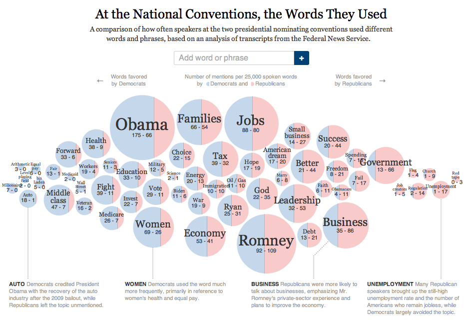

Description
A bubble comparison chart, also sometimes called a is a variation of the scatter plot. In conventional bubble comparison charts, data points are depicted as bubbles along X and Y axes. An additional variable is illustrated through the size of the bubbles. This can add significant value to otherwise simple data visualizations.
Usage
Bubble comparison charts are generally used to compare quantitative variables, and can be useful in visualizing both categorical and continuous data. Though they do no necessarily require axes and dimensionality, they are effective tools for adding a level of depth to scatter plot data. For example data comparing the number of friends people have at different ages could easily be represented by dots on a scatter plot, but is more quickly understood as a bubble comparison chart (See Example 1). Bubble charts are most useful however, for depicting 3 or more elements of a data set. Example 2 demonstrates how time and ad-spending are shown along the axes and the assumed results of these elements, sales revenue, is displayed through the bubble sizes.
Images & Examples
Example 1 - Simple Bubble Comparison Chart
This example illustrates the most basic use of a bubble comparison chart, in which only 2 quantitative variables are shown, but the size of the bubbles is used to visually assist comparison.
Example 2 - Standard Bubble Comparison Chart
This example illustrates the basic premise of a bubble comparison chart: 2 variables depicted along the axes and a 3rd illustrated through the size of the bubbles.

Example 3 - Bubble Comparisons in the Media
This is one of the most famous bubble comparison charts, from Swedish researcher Hans Rosling's TED Talk on the correlation between national wealth and national health. The animated version on his Web Site provides an interesting perspective on the rise in life expectencies over the 20th century.

Example 4 - 3D Bubble Comparison Chart
This demonstrates an attempt at portraying a bubble comparison chart in 3D. Whether or not this makes the chart more effective is questionable.
Example 5 - Bubble Comparison Chart x Pie Chart
This example demonstrates a variation of a bubble comparison chart in which the bubbles, differentiated by size according to one quantitative measure, are also pie charts based on a different quantitative measure. It lacks a y-axis dimension but variations such as this show how bubble comparison charts can display more than 3 variables. 
How to...
Step 1
Gather and organize data so that one variable can be depicted along a chart's X-axis, and if desired, another can be depicted on the y-axis.
Step 2
Connect a 3rd variable to corresponding X or Y axis values. Ensure that that 3rd variable contains quantitative values.
Step 3
In excel, create a bubble comparison chart using the chart toolbar.
Step 4
Right click on the inserted chart and then click 'selecct data'. In the 'select data' window, click 'edit'. Add the appropriate data to the X, Y, and Bubble Size series boxes. Click 'OK' to produce the chart.
Step 5
Add labels to the chart, axes, and bubble if necessary. Clean up the chart graphically as desired in Illustrator or another program.
Advantages & Disadvantages
The primary advantage of the bubble comparison chart is the ease of visual comparison it facilitates. As long as data dimensions are clearly labelled, the eye can quickly and easily distinguish the relative difference between bubbles and therefore significance of the data. The chart is therefore particularly good at highlighting extremes, or calling attention to the relative importance of certain data points relative to others. While they make comparison easy, a disadvantage of bubble comparison charts is that they make accurate determinations more difficult. It is more difficult to determine the exact position of a bubble, and therefore its value on any axes, than it is to do the same with a small point. Even comparison with bubble charts is not always straightforward, as some chart styles may differentiate based on bubble diameter and other based on bubble volume. Comparison with bubble charts is also difficult when the range of data values is too large and bubble sizes are too extreme as a result.
History
The exact origin of the bubble comparison chart is unknown but, like many chart types, it appears to have its origins in mapping. French engineer Charles Joseph Minard's (1781-1870) bubble map is one of the earliest recorded examples of differentiated bubble sizes used to display data. His map displayed freight tonnage at Europe's major river ports in the 1850s, and used bubble size to display the variation in total tonnage. Little additional information on the history of bubble charts is available, though they appear to have become more common since the widespread adoption of statistical softwares like Excel.
Sources